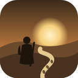

걷는 여정
지도를 따라 장면에서 장면으로
노래와 지혜
시편의 노래, 잠언의 하루
처음 만나는 분께
복음과 질문, 짧게

순례 게임무료 · 설치 없이걷고, 만나고, 모으는 성경 순례 게임
단서 하나 들고 지도를 걸어 그분을 찾아가세요. 늦으면 은·동, 길을 잃으면 모래바람 — 제때 만나면 금빛 말씀 카드가 손에 들어옵니다.
5여정
50+장면 놀이
220+말씀 카드
- 🧭단서와 발자국만 보고 길 찾기
- 🎮장면마다 미니게임 — 퍼즐·박자·피하기
- 🃏금·은·동 말씀 카드와 숨겨진 보물